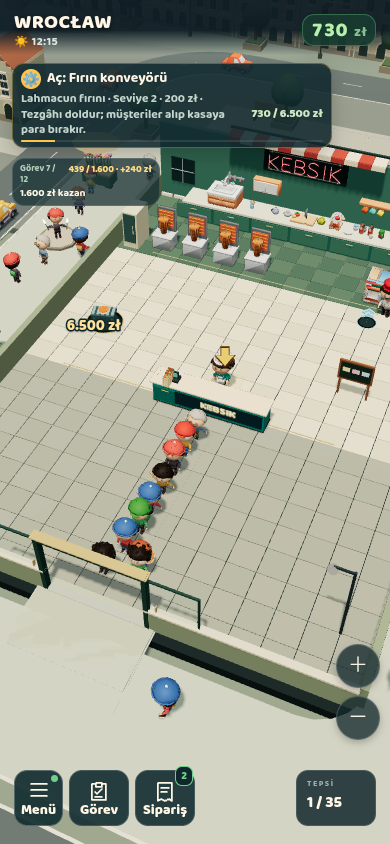
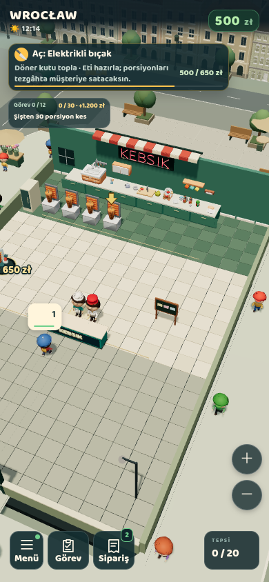

Kebsik Mini — müşteri ve kuyruk
0.1.59 güncellemesi. Görsele dokunarak tam boy açabilirsin.




Gerçek oyun çizimlerinden tarayıcı çekimleri; fiziksel telefon çekimi değildir. Kuyruk, tohum325 ile oynanan otomatik kampanyanın kontrol noktasıdır; kamera kuyruğa odaklanmıştır. Teslim karesi, boş dükkâna stok taşıma ve ardından gerçek müşteriye teslim akışının C# kaydından alınmıştır. Görseller değiştirilmemiştir.